便利な機能
指示を保存する、資料を渡す、会話をまとめる、作ったものを共有する。2026年11月4日確認。
繰り返し使う回答手順については、スキルタブをご覧ください。
| したいこと | 使う機能 | できること |
|---|---|---|
| 同じテーマの会話と資料をまとめたい | ChatGPT／Claude：プロジェクト | 同じテーマの会話・資料・共通の指示をまとめ、継続して作業する機能 |
| 複数の資料について質問したい | Gemini Notebook／Copilot：ノートブック | 資料を登録し、要約や質問に使う |
| 会社で使う専用アシスタントを作りたい | Microsoft 365 Copilot：エージェント | 目的・指示・知識を設定し、組織内で利用する |
| 同じ指示や手順を別のチャットでも使いたい | スキル | 詳しくは別タブ「スキル」へ |
ChatGPT：プロジェクト
同じテーマの会話・資料・共通の指示をまとめ、継続して作業する機能です。プロジェクト内で新しいチャットを始めると、登録した資料や共通の指示を使って相談できます。
プロジェクトで試す
- プロジェクトを作り、名前を付ける。
- プロジェクトの指示に共通の設定を入れ、ソースに業務資料を追加する。
- そのプロジェクト内で新しいチャットを始め、質問する。
公式情報：ChatGPT：プロジェクト
Claude：プロジェクト
同じテーマの会話・資料・共通の指示をまとめ、継続して作業する機能です。
以下は従来版のプロジェクトの手順です。一部のPro／Max／Ultra利用者には新しいプロジェクトのベータ版が段階的に提供され、既存プロジェクトの移行も始まっています。移行済みの画面では操作が異なる場合があります。
- プロジェクトを作り、名前を付ける。
- プロジェクトの指示に、役割・回答形式・注意点を保存する。
- 知識に資料を追加し、プロジェクト内で質問する。
Freeは最大5件のプロジェクト。有償プランは大量の知識をRAGで扱えます。Team／Enterpriseでは組織内で共有できます。
公式情報：Claude：プロジェクト
Gemini Notebook：資料を中心に試す
- Geminiの「ノートブック → 新しいノートブック」で名前を付ける。
- 「ソースを追加」から業務資料を入れる。
- ノートブックの設定に共通の指示を入れ、ノートブック内で質問する。
資料・カスタム指示・会話をまとめて扱う方法です。Geminiとの連携は順次提供。Gemini内に入口がなければ、利用中のGemini Notebook側で作成してください。Gemini側ではWeb検索なども使えるため、資料だけを根拠にする指示と回答の確認が必要です。
Geminiでチャットを自動保存したり、ノートブック内の過去のチャットを回答に利用したりするには、「アクティビティの保存」をオンにする必要があります。Gemini Notebookの共有ノートブックはGemini側のサイドバーには表示されないため、共有リンクからGemini Notebookで開いてください。
公式情報：Gemini：ノートブックの作成と指示 ／ Gemini Notebook：プランと上限
Microsoft 365 Copilot：エージェント
- 会社・学校のアカウントで「Agents & Skills（エージェントとスキル）／新しいエージェント」を開く。
- 手動設定なら「Skip to configure」を選び、名前・説明・指示を入れる。
- Knowledge（ナレッジ）に業務資料を追加し、Try it（テスト）で質問する。
名前・指示・知識を設定して使う専用アシスタントです。作成・利用には、組織のライセンスと管理者設定の確認が必要です。
公式情報：Microsoft 365：エージェントの作成 ／ Microsoft 365：エージェントへのスキル追加 ／ Microsoft 365：エージェントの利用条件
回答範囲に注意：「Only use specified sources」は登録ソースを優先する設定で、一般知識を完全に遮断する機能ではありません。厳密な制御にはCopilot Studioの設定も検討します。
Copilot（個人）：ノートブックが使える場合
ノートブックに業務資料を追加し、「… → Instructions（指示）」に共通の設定を保存します。個人向けはMicrosoft 365 Personal／Family／Premium／Proで提供が案内されています。会社向けエージェントとは入口と利用条件が異なります。
公式情報：Copilot：ノートブックへの指示
共有するとき
共有メニューから相手や範囲を選びます。会話だけでなく、指示や資料を相手が閲覧できるかも確認してください。
公式情報：Claude：プロジェクト ／ Copilot：ノートブックへの指示
画面付き手順書（2026年9月の画面）
以前掲載していた手順とスクリーンショットです。画面を見ながら操作したい場合はこちらを参照してください。現在の名称・利用条件は上の最新ガイドに記載しています。GPT／Gemの移行については「スキル」タブをご覧ください。無料・有料の条件は各サービスの公式情報を優先してください。
ChatGPT
プロジェクトで作る
- 左のサイドバーの「プロジェクト」の横にある「＋」（プロジェクトを新規作成）を押す
- プロジェクト名を入力して「プロジェクトを作成する」
- プロジェクト画面の右上の「…」→「プロジェクト設定」を開く
- 「指示」の欄に設定のプロンプトを貼って「保存する」
- 「情報源」タブ →「ソースを追加」から資料を入れる（アップロード、テキスト入力、Googleドライブなど）
- プロジェクトの入力欄（「〇〇内の新しいチャット」）から質問する
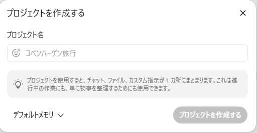
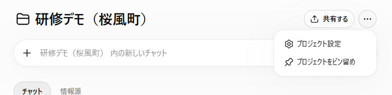

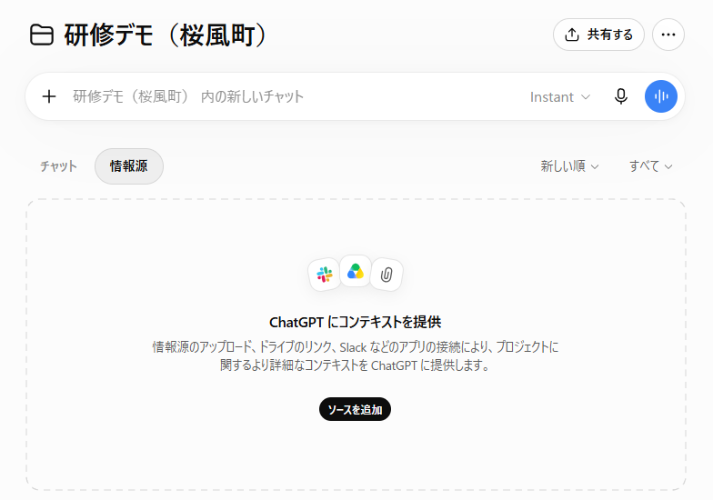

GPT で作る（すでに使っている人向け）
- 「GPT」→「作成」を開き、「構成」タブを選ぶ
- 名前・説明・指示を入力する
- 「知識」の「ファイルをアップロードする」で資料を入れる
- 右上の「作成する」で保存
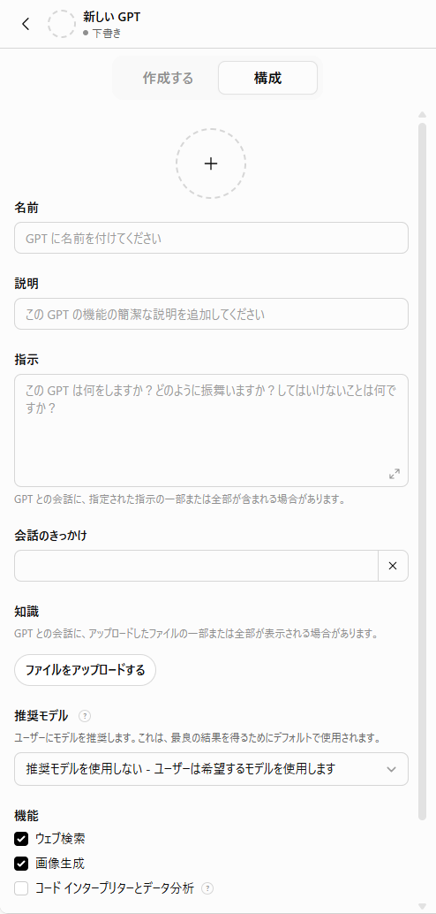
チャットで資料を渡す（保存しない場合）
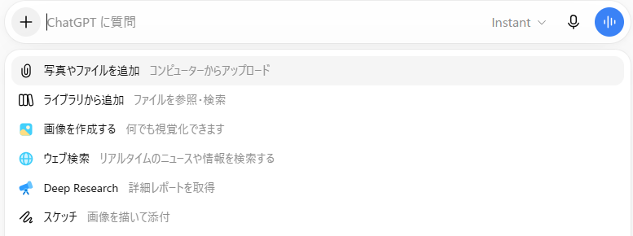
Claude
- 左のサイドバーの「プロジェクト」→ 右上の「新規プロジェクト」
- 「何に取り組んでいますか？」に名前を入れて「プロジェクトを作成」
- プロジェクト画面の「指示」の鉛筆マークから、設定のプロンプトを書いて「指示を保存」
- 「コンテキスト」の「＋」から資料を追加する（ファイル、テキスト、Googleドライブなど）
- 上の入力欄から質問する
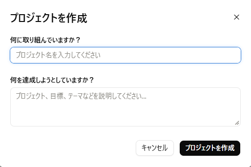

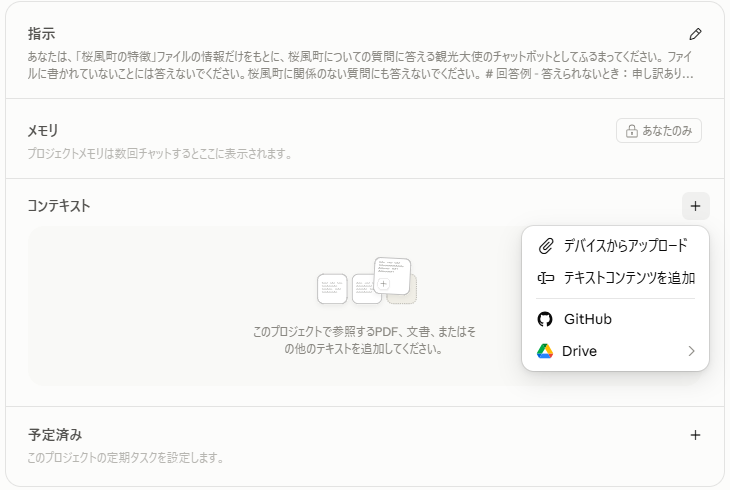

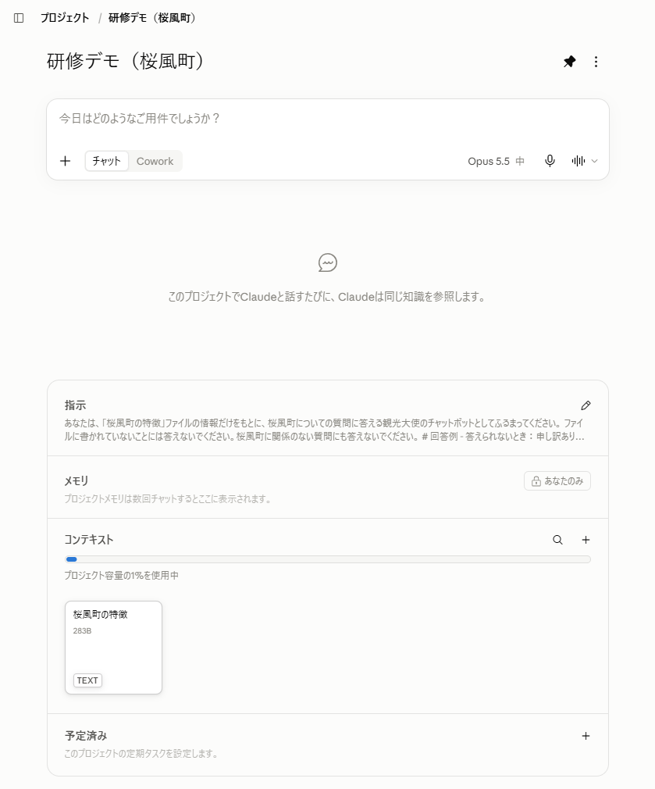
Gemini（Gem）
- 左のサイドバーを開いて「Gem」→「新しいGem」
- 名前・説明・カスタム指示（設定のプロンプト）を入力する
- 「知識」の「＋」から資料を追加する（ファイル、Googleドライブ、Gemini Notebook など）
- 右の「プレビュー」で試して、「保存」
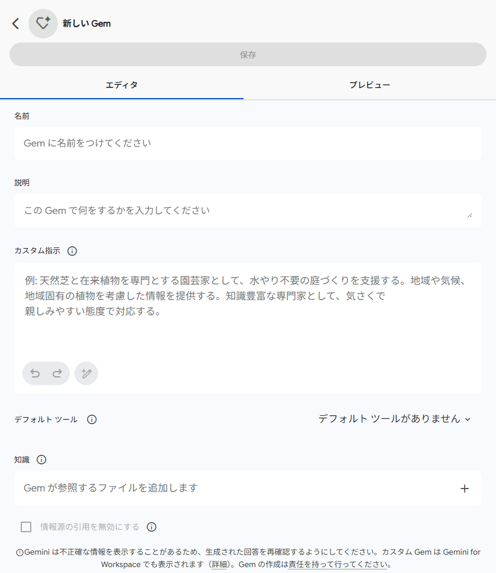
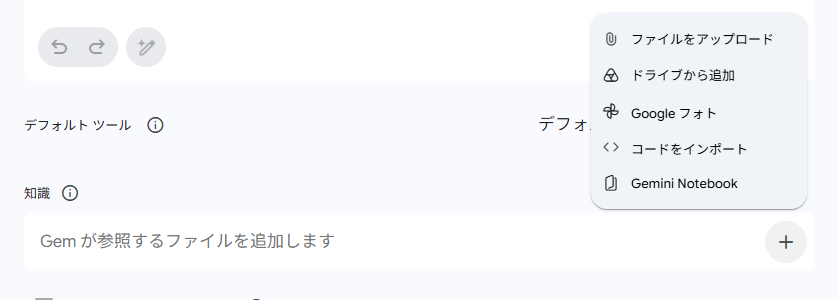
Gemini Notebook（旧NotebookLM）
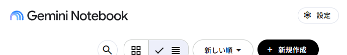
- notebook.google.com を開いて「新規作成」
- 「ソースを追加」から資料を入れる（ファイル、Webサイト、ドライブ、コピーしたテキストなど）
- 「ソース」タブで、使う資料にチェックが入っているか確認する
- 「チャット」タブで質問する
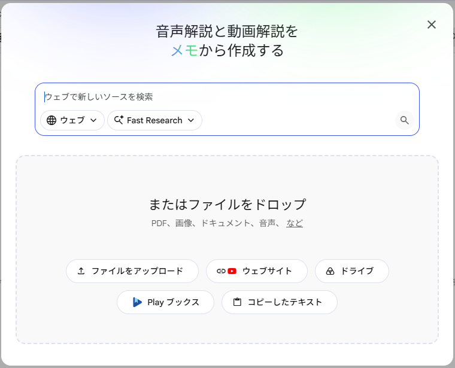
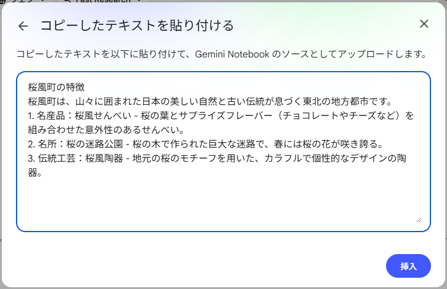
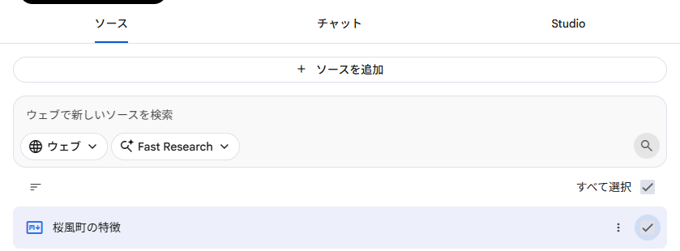
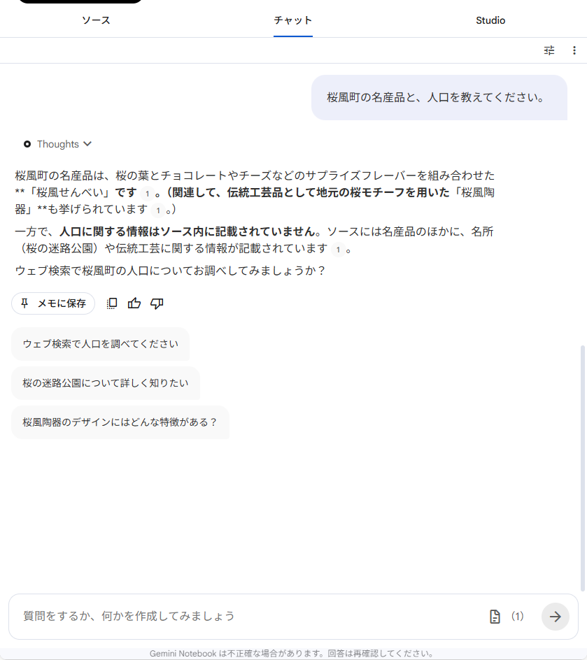
Microsoft 365 Copilot（会社のアカウント）
- 左の欄の「エージェント」→「新しいエージェント」（スマホでは作れません）
- 「自分だけのエージェントを構築する」画面の右上の「スキップ」を押す（会話で作る方法もありますが、スキップすると入力欄に直接書けます）
- 「構成」タブで、名前・説明・指示（設定のプロンプト）を入力する
- 「ナレッジ」で資料を追加する（添付ファイル、クラウドファイル、Web検索など）
- 右上のボタンから作成（保存）する。作ったエージェントは、開いて右上の「…」→「エージェントを共有」から同僚に共有できます
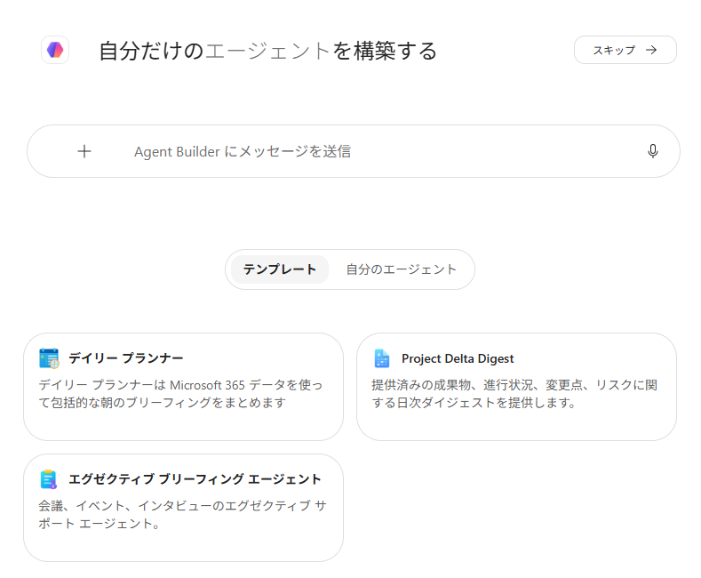


Copilot（個人向け）
- 左の欄の「ノートブック」→「新しいノートブック」
- ノートブック名を入れて「次へ」
- 「参照」に資料を追加して「作成」（アップロード、リンク、OneDrive）
- ノートブック画面の右上の「…」→「手順」に設定のプロンプトを書いて「保存」
- ノートブックの入力欄から質問する
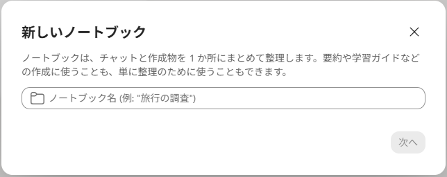
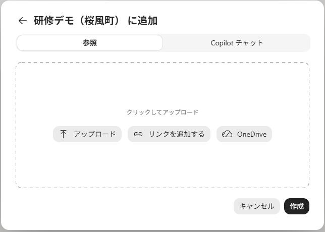
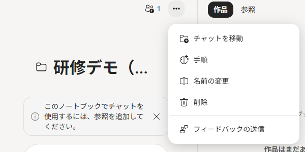
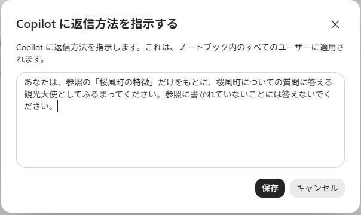
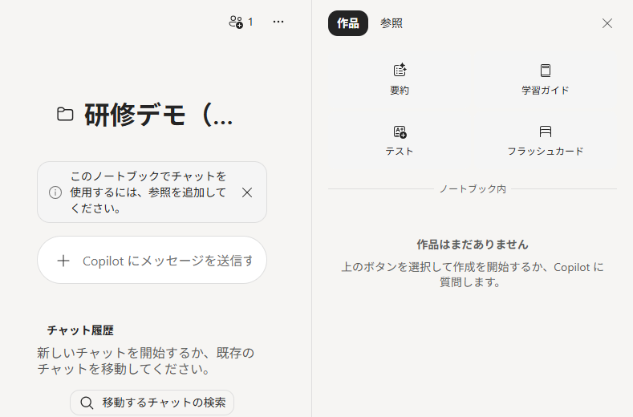
学習に使わせない設定について
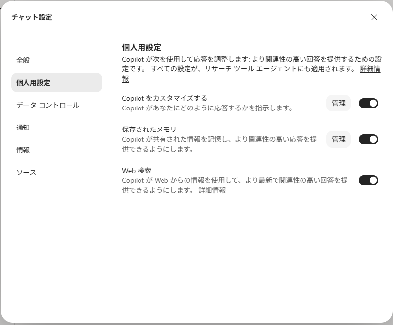
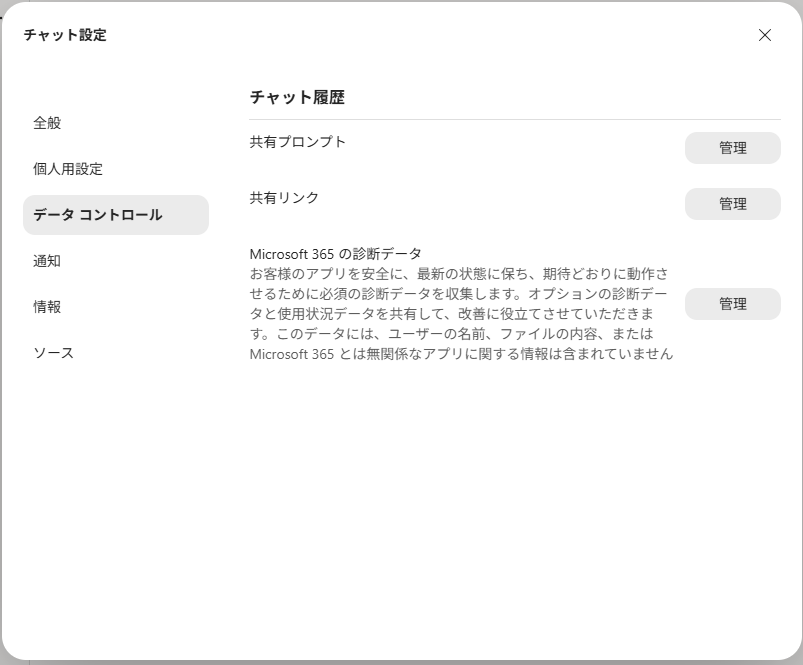
作ったものを共有する
ChatGPT：プロジェクトを共有する
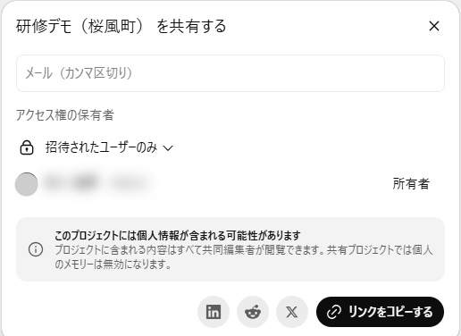
Gemini：Gem を共有する
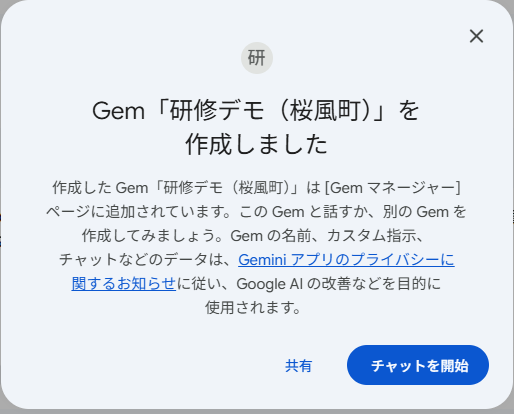
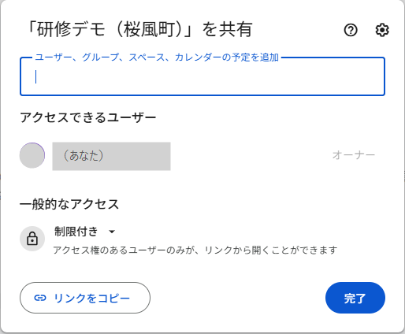
Gemini Notebook：ノートブックを共有する
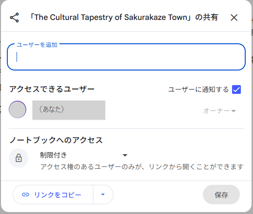
Copilot（個人）：ノートブックを共有する
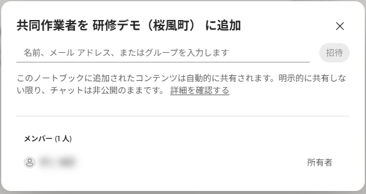
Microsoft 365 Copilot：エージェントを共有する
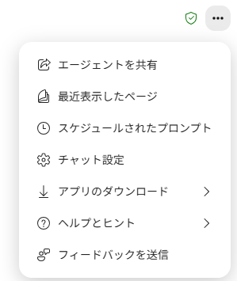
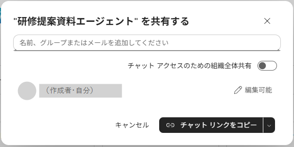
Claude：以前のプロジェクトメニュー
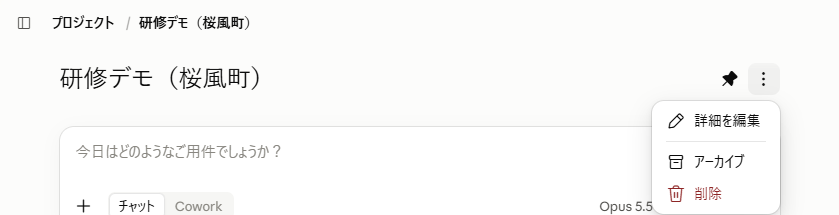
公式情報
公式情報：ChatGPT：プロジェクト ／ Claude：プロジェクト ／ Gemini：ノートブックの作成と指示 ／ Gemini Notebook：プランと上限 ／ Microsoft 365：エージェントの作成 ／ Microsoft 365：エージェントの利用条件 ／ Microsoft 365：知識と回答範囲の設定 ／ Copilot：ノートブックへの指示